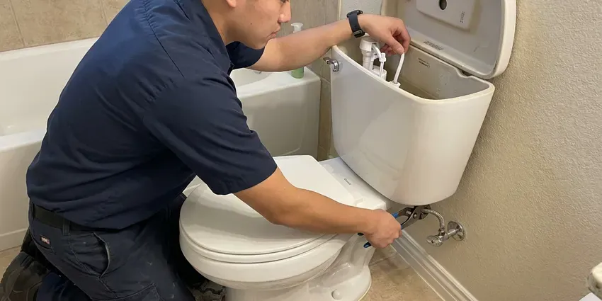
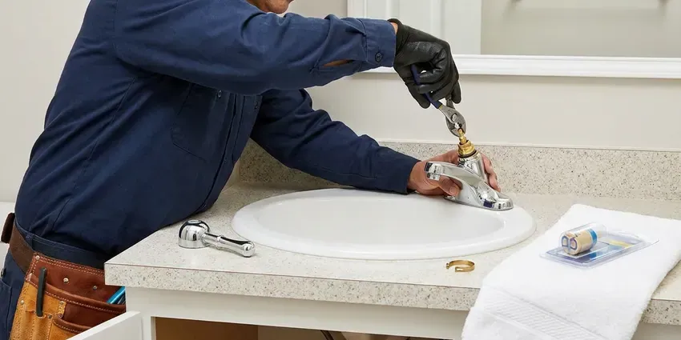

Shower Replacement in Schaumburg, IL
Looking to upgrade your bathroom? HVM Plumbing provides professional shower replacement services across Schaumburg, IL.
- Quality Materials
- Upfront Pricing
- Leaking Pans Replaced
- Skilled Plumbers

Your Trusted Shower Replacement Specialists in Schaumburg, IL.
Call HVM Plumbing today for a free estimate and professional service.
Complete Shower Replacement Services in Schaumburg, IL
HVM Plumbing often finds that an older shower leak has spread behind the wall or under the floor. We fix the source and replace damaged materials so the problem does not return. You get honest advice on whether a partial or full replacement makes sense.
Our expertise includes:
- Full shower unit removal and disposal
- Full removal and installation of shower units.
- Shower pan and drain replacement after hidden leaks

Additional Bathroom Plumbing Services in Schaumburg, IL
From toilets to showers, our bathroom plumbing team in Schaumburg, IL repairs, installs, and replaces every fixture with clean, code-compliant work.


Schaumburg toilet repair specialists



Faucet Repair service for Schaumburg homeowners


Customers
Why Choose HVM Plumbing for Shower Replacement in Schaumburg, IL?
Older shower valves often lack anti-scald protection and develop leaks inside the wall. Replacing them improves safety and stops hidden water damage before it spreads.
- Right-Sized Fix, We recommend a valve swap, pan replacement or full rebuild based on what we find.
- Transparent Pricing, You will receive a clear, upfront estimate before any work begins, with no hidden fees.
- Damage Check, We inspect framing and subfloor for rot and mold before rebuilding.
Citywide Coverage
We replace showers in homes across Schaumburg, from 1970s builds with original valves to newer homes with failing pans. Inspections and quotes are scheduled promptly.
Experienced Team
Each plumber at HVM Plumbing is background-checked and continuously trained to deliver top-quality workmanship and follow all safety procedures during your shower replacement. You can trust our professionals.
Safety-First Approach
Before and after every shower replacement, our team conducts careful checks to confirm all connections are secure and leak-free. We prioritize the long-term safety and integrity of your bathroom plumbing system, following all local standards.
Trusted Certified Schaumburg Plumbing Services Professionals
At HVM Plumbing, we take pride in providing licensed, certified plumbing services throughout Schaumburg, IL. Backed by leading industry credentials, our experienced plumbers combine technical skill with genuine customer care. Whether it is repair, installation, or maintenance, we follow strict safety and quality standards to deliver long-lasting results you can trust.
Call Us Now PHCC Plumbing Contractor Recognition
PHCC Plumbing Contractor Recognition Better Business Bureau (BBB) Accreditation
Better Business Bureau (BBB) Accreditation Angi Certified Pro
Angi Certified Pro ISO 9001 Quality Management Certification
ISO 9001 Quality Management CertificationDependable Shower Replacement Services in Schaumburg, IL
Emergency Shower Leak Solutions in Schaumburg, IL
While a full shower replacement is rarely an emergency, a severe leak coming from the shower plumbing can be. If you experience sudden, significant water damage from your shower, HVM Plumbing offers emergency services to isolate the leak and provide temporary or permanent solutions. We can determine if a full replacement is the best long-term fix in Schaumburg, IL.

Cost-Effective Shower Upgrades in Schaumburg, IL
While a full bathroom remodel can be extensive, replacing just your shower can be a cost-effective way to refresh your bathroom's look and function. HVM Plumbing offers various options to fit different budgets, from replacing a basic shower stall to installing a more luxurious custom unit. We provide clear pricing and help you choose the best solution that delivers maximum impact and value for your Schaumburg, IL home without breaking the bank.
Custom Tile Shower Replacement in Schaumburg, IL
For homeowners who want a more personalized look, we offer custom tile shower replacement. This involves expert demolition of the old shower, precise waterproofing of the shower pan and walls, and professional tile installation. Our plumbers make sure of proper slope for drainage and correct installation of fixtures, creating a beautiful and functional space in Schaumburg, IL.
Tub to Shower Conversions in Schaumburg
Update your bathroom by converting an old bathtub into a modern, accessible shower. HVM Plumbing manages the entire process, including rerouting drain lines, installing new shower pans, and setting up walls and doors. This upgrade not only improves the look but also improves safety and function for many Schaumburg residents.
Replacing Showers for Hard Water Issues in Schaumburg, IL
Hard water across much of Illinois leaves mineral scale in water heaters, faucets, and appliances, so softeners are a common upgrade. Hard water can cause mineral buildup in showerheads, valves, and on surfaces, leading to reduced water pressure and a dingy appearance. If mineral scale has damaged your shower beyond repair, HVM Plumbing can replace affected components or the entire unit. We can also recommend solutions like water softeners to prevent future issues, helping your new shower in Schaumburg, IL keep its performance and looks for years to come.
Shower Replacement Cost Comparison in Schaumburg, IL
A valve-only replacement typically costs far less than a full rebuild, but it only makes sense if the pan and walls are sound. Shower pan replacement often requires removing tile, which raises the cost. We compare the price of each option against the condition of your shower. That helps you invest in the fix that holds up.
Commercial and Rental Shower Replacement in Schaumburg
Rentals, hotels and gyms need durable showers that are easy to maintain. We replace valves, heads and units with commercial-grade components. Work is scheduled to minimize downtime for tenants or guests. We also standardize parts to simplify future repairs.

Fiberglass Shower Unit Replacement in Schaumburg
Older fiberglass and acrylic units can crack, fade and leak at the base. We remove the old unit, check the framing and drain and install a new one-piece or multi-piece unit. Many homes have narrow doorways, so we often use multi-piece units that fit through. The result is a clean, long-lasting shower.
Expert Shower Replacement Near Me in Schaumburg, IL
When you search for shower replacement near me in Schaumburg, IL, HVM Plumbing is the trusted local choice. Our location allows us to respond promptly to your service requests, providing prompt and reliable shower replacement solutions right in your neighborhood. We are committed to serving the entire Schaumburg area with professional plumbing expertise.
HVM Plumbing understands the local needs and plumbing challenges faced by homeowners in Schaumburg, IL. We take pride in being a community-focused plumbing company, always ready to deliver high-quality shower replacement services conveniently and efficiently to homes near you.
HVM Plumbing at a Glance
- Licensed and insured plumbers serving Schaumburg, IL
- Same-day appointments and 24/7 emergency response
- Clear written estimates, no hidden fees
- 4.8-star rated by 528+ Illinois customers
Schaumburg Map
Schaumburg Information
- Population
- 75,750
- Area codes
- 847/630/331
- Service area
- Schaumburg and communities within 40 miles
- Nearby
- Hoffman Estates, Palatine, Arlington Heights, Mount Prospect
Illinois has a large stock of older homes, and many still have cast iron drains, galvanized steel supply lines, or original clay sewer pipe. Replacing your shower in Schaumburg, IL is an excellent investment, since updated fixtures boost both comfort and home value.
Expert Services
Trust our professionals for reliable HVM Plumbing solutions in Schaumburg, IL.
Our Specialized Plumbing Services in Schaumburg, IL
At HVM Plumbing, we provide a complete range of plumbing services across Schaumburg, IL. From leak detection to full system installations, our team ensures fast, precise, and affordable service for both residential and commercial properties. Explore our core services below:


How Our Shower Replacement Process Works in Schaumburg, IL
Our shower replacement process is designed for efficiency and little disruption, ensuring a smooth experience from start to finish.
Request a Quote
Call (773) 903-7643 to schedule an inspection of your current shower. We explain your options and provide a clear written quote.
Remove and Inspect
We remove the old valve, pan or unit and inspect framing and subfloor. Any hidden damage is shown to you before we rebuild.
Install and Test
We install the new shower components and pressure-test or flood-test them. After finishing, we test temperature and flow and clean up.
Frequently Asked Questions About Shower Replacement in Schaumburg
The cost of shower replacement in Schaumburg, IL can range from $1,500 for a basic unit swap to over $10,000 for custom, tiled walk-in showers with high-end fixtures. Factors like shower type, materials, and plumbing changes affect the final price. We provide detailed estimates after an on-site assessment.
We install Moen, Delta, Kohler, Grohe, Hansgrohe and American Standard. We also install fiberglass and acrylic units from Sterling, American Standard and others.
Yes, tub-to-shower conversions are a popular service we offer. This involves removing the existing bathtub and installing a new shower pan, walls, and fixtures in its place. It can significantly improve accessibility and modernize your bathroom's appearance.
If no one uses the tub, a walk-in shower is often safer and more convenient. Keep at least one tub in the home if resale to families is a concern.
Valve and pan replacements may require a permit depending on the city and scope. We check requirements and handle permits as needed.
Hard water across much of Illinois leaves mineral scale in water heaters, faucets, and appliances, so softeners are a common upgrade. Even moderately hard water can still lead to mineral buildup in showerheads and on surfaces over time. This can reduce water flow and cause ugly stains. When replacing your shower, we can recommend fixtures designed to be more resistant to mineral buildup.
Replacing trim or a showerhead is DIY-friendly. Valve, pan and drain replacements are hidden work where mistakes cause leaks, so a licensed plumber is the better choice.
Illinois has a large stock of older homes, and many still have cast iron drains, galvanized steel supply lines, or original clay sewer pipe. Older homes may have original plumbing systems that need updating during a shower replacement, such as galvanized pipes or outdated drain lines. We carefully assess your existing plumbing to recommend necessary upgrades for strong performance and code compliance, preventing future issues.
What People Are Saying About Our Plumbing Experts?

Patricia H.
We had a slab leak that two other companies could not find. HVM Plumbing located it in under an hour, explained our options, and the price matched the quote to the dollar.
Slab Leak Repair · Des Plaines, IL
Emily R.
I called HVM Plumbing for plumbing repair, and the technician was fast, polite, and thorough. They explained the problem clearly and fixed it the same day. I will definitely hire them again. Highly recommended!
Plumbing Repair · Mount Prospect, IL
Laura S.
I scheduled a water heater replacement, and the team made the process smooth and affordable. The new unit works perfectly, and they cleaned up after completing the job.
Water Heater Replacement · Schaumburg, IL
James P.
Our commercial plumbing system had a leak under the sink, and HVM Plumbing handled it professionally. The plumbers arrived quickly and restored everything without disruption to our customers.
Commercial Plumbing · Arlington Heights, ILRobert G.
The trenchless sewer replacement saved our front yard. They walked us through the camera inspection footage first so we knew exactly what we were paying for.
Sewer Line Replacement · Wheaton, IL
Mark T.
When our office needed drain cleaning, HVM Plumbing provided quick, reliable service. The plumber arrived on time and made sure every drain flowed perfectly before leaving. Very satisfied.
Drain Cleaning · Palatine, IL